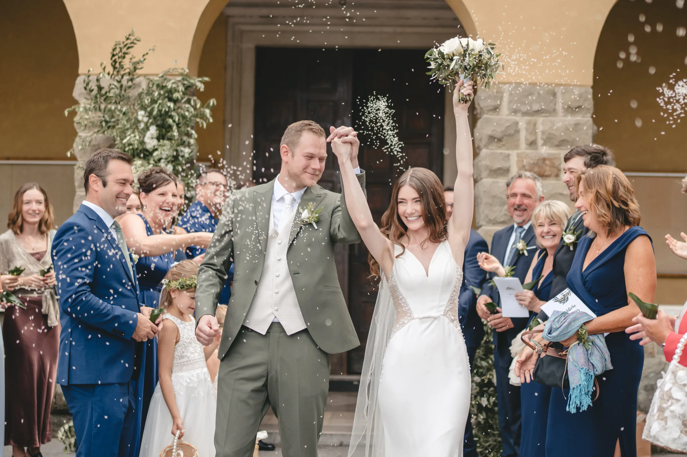
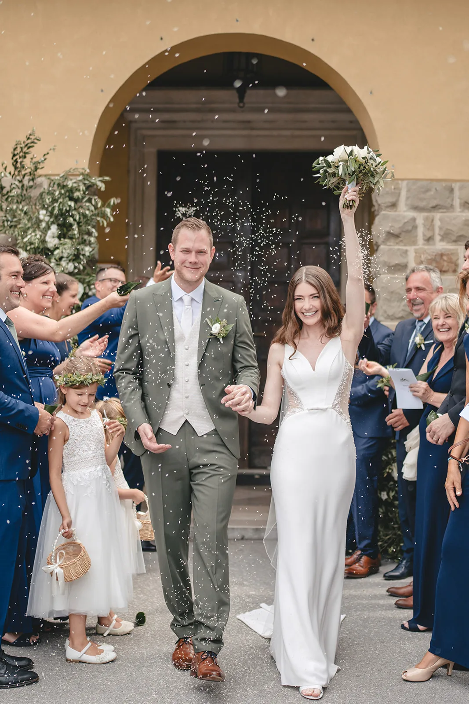
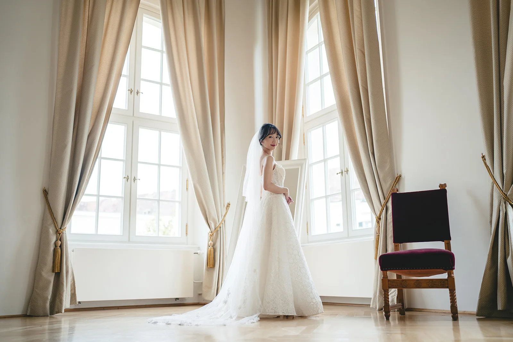

Euer Hochzeitsguide
Euer Fahrplan für die Hochzeit 2027
Tipps von euren Experten für Foto & Video
Termin unverbindlich checken
Tipps von euren Experten für Foto & Video
Termin unverbindlich checkenHerzlichen Glückwunsch! Ihr habt euch entschieden, 2027 "Ja" zu sagen. Das klingt noch weit weg, doch die schönsten Geschichten beginnen mit einer entspannten Planung. Hier sind unsere fünf Profi-Tipps, damit eure Hochzeitsbilder und euer Film so einzigartig werden wie ihr.
Die beliebtesten Locations und Dienstleister werden oft 18-24 Monate im Voraus angefragt. Indem ihr euch 2027er Termine bereits jetzt sichert, habt ihr die freie Auswahl — und müsst keine Kompromisse bei eurem Stil machen.
Ein Foto hält den Moment fest, ein Film die Emotion und den Ton. Überlegt euch frühzeitig, ob ihr eine reine Reportage möchtet oder einen "Cinematic Short Film", der eure Hochzeit wie ein Hollywood-Epos erzählt. Beides sollte harmonisch aufeinander abgestimmt sein.

FotoEuer Fotograf und Videograf ist der Dienstleister, der euch am Hochzeitstag am nächsten ist. Achtet bei der Auswahl nicht nur auf das Portfolio, sondern auch auf euer Bauchgefühl beim ersten Kennenlernen. Nur wenn ihr euch wohlfühlt, entstehen authentische, ungestellte Aufnahmen.

Die Preise in der Hochzeitsbranche passen sich jährlich an. Ein großer Vorteil für 2027er Paare: Wer jetzt bucht, sichert sich oft die aktuellen Konditionen und schützt sich vor Preissteigerungen in den kommenden Jahren.
Plant für eure Paarfotos unbedingt die "Golden Hour" ein — kurz vor Sonnenuntergang. Das weiche Licht sorgt für magische Aufnahmen, die man mit keinem Blitz der Welt nachstellen kann. Wir beraten euch gerne bei der zeitlichen Planung!





Bereit?
Meldet euch einfach für einen kurzen 10-Minuten-Call.
0660 4822420oder
Kontaktformular